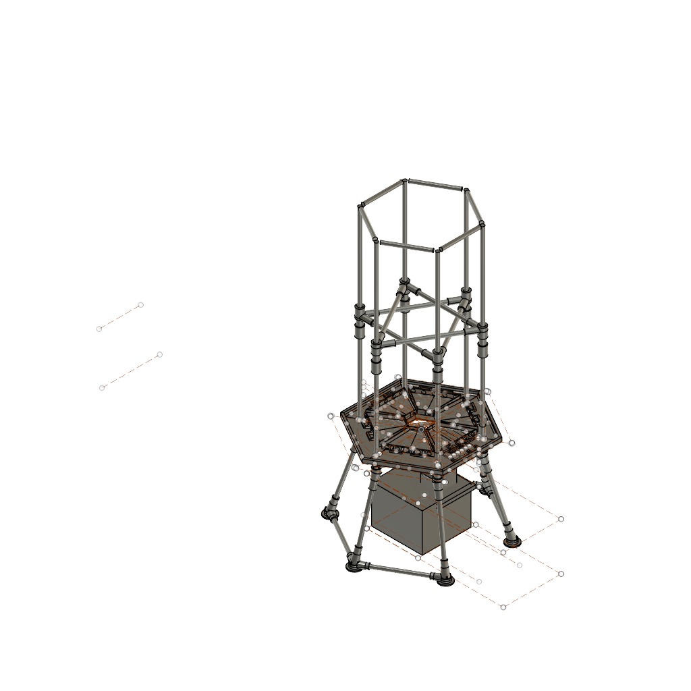

VerTea
Hexycle Explorer
トップへ戻る
CAD 原図
⛶ 全画面
Home
Discover
Journey
VerTea
3D Explorer
Home
/
3D Explorer
六角形の水耕ラボ
▷ 自動デモ
装置の構造
水の循環
光と空気
▷ 再生
次の流路 →
0.5×
1×
2×
3D CONCEPT MODEL
実機未接続
視点：
全体
−
＋
↺
作成途中の CAD 原図
0.4.0 Body.f3d に保存されたプレビュー

閉じる